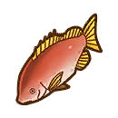

Tigre


"Un niño que llegó a Islote del Crepúsculo con Ludus, animado por su abuelo, Haulani. Su comida favorita es el pescado fresco, sobre todo el agua de mar".
Tigre es un personaje que regresa en Story of Seasons: Pioneers of Olive Town, originalmente era un personaje de Story of Seasons: Trio of Towns. Se desbloquea tras conseguir el pase de expanción.
Es el nieto de Haulani, Tigre, habla con cortesía con todos. Sueña con ser tan fuerte y confiable como su abuelo. A veces le cuesta integrarse con los alegres aldeanos de Lulukoko. Admira a Ludus como a un hermano mayor. Al llegar a Islote del Crepúsculo se quedo a vivir en la casa de Ludus.
Cumpleaños | 09 de Otoño |
|---|---|
| Familia | En otra ciudad |
Horario |
Cualquier día
  |
Moriya empezará su día en la Casa de Ludus de 06:30 - 07:45, para luego pasear por todo Islote del Crepúsculo de 07:45 - 17:30 y finalmente se quedara por el resto del día en la Casa de Ludus llegando a las 17:30. |
|---|---|---|
Cualquier día
   |
Tigre estara todo el día en la Casa de Tigre. | |
Nota: Puede conocer mejor sobre los lugares disponibles que hay en el juego y lo puede consultar en la sección de lugares. | ||
Preferencias de regalo
La mejor forma de mejorar la amistad y el afecto con los aldeanos o candidatos a matrimonio es siempre regalarles las cosas que le gusta una vez por día, aqui se mustra los regalos que puedes darle a este personaje.
|
😍
Fasina
|
 Acquapazza  Pulsera ala moda  Dorado  Atún |
|---|---|
|
🙂
Encanta
|
 Pezcaimán  Tintenegro  Pasta a lacarbonara  Siluro  Gambasal chili  Cangrejode río  Anguila  Calamargigante  Pescado ala plancha  Hibisco  Pezespada  Rape  Pescatore Bol desashimi  Lubina  Besugo Sashimi debesugo  Relojbrillante  Eperlanoshishamo  Tempura  Bol deanguilas |
|
😐
Gusta
|
 Pezaurora  Calamarmanopla  Vals de lasllamas  Pescadohervido  Boqueronesen vinagre  Perfume deramo  Coloniaencantadora  Bacalao  Calamarcomún  Cebo decangrejo  Sepia  Leucisco  Conciertode la tierra  Cebo depesca basico  Perfumefloral  Platija  Escalopede atún  Perfumefrutal  Silurogigante  Langostinode río  Merogigante  Redgigante  Pizza demarisco gigante  Camarón tigregigante  Pez caimána la plancha  Cebo deguardián  Fletán  Fletán alcartoccio  Arenque  Jurel  Medallónenjoyado  Anilloenjoyado  Cebo depescado grande  Langosta  Sushi depez espada  Cebo depescado mediano  Sabalote  Nocturno deluz de luna  Redmultiusos  Cebomisterioso  Red  Pezremo  Ramoarcoíris  Langostade roca  Salmón  Sardina  Cataplanade marisco  Pezbrillante  Cebo degamba  Cebo depescado pequeño  Pescaditomarinado  Cabeza deserpiente  Pezradiante  Calamarlanceolado  Rayajaspeada  Marcha deprimavera  Cebo decalamar  Pargo  Tilapia  Camarón gamuzabarbudo  Rondó floresde invierno  Percaamarilla |
| Nota: Todos los regalos que no estan aquí son considerados neutrales para el personaje. | |
Eventos del personaje
Debido a que es un aldeano que se desbloqueo por el pase de expanción no tiene ningun evento.